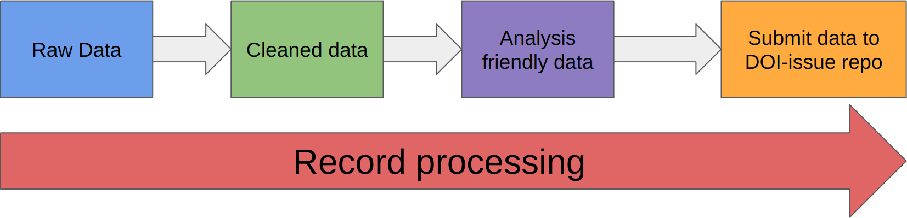

Moving from spreadsheets to data#
We often use spreadsheets to store data, visualise those data and even analyse it. It’s therefore useful to think about the differences between a spreadsheet of data and what a computer will do with it.
When loading data into a program you are parsing the data from a file into variables. Whilst this can be done manually, there are libraries and tools to help us do this for most common data formats.
Data Management#
Given data is a key part of most research codes, it is really important data is properly managed. Like your code, different versions need to be tracked and labelled to make sure any processing is clear.
Data formats#
Data comes in many formats. We need to think about what this is and how to read it.
Human readable data is any data that can be opened in a text editor and a human can decipher it. This means the data is text based (even if it’s numbers), not binary (zeros and ones). Common human readable data are CSV (comma seperated values) or XML (eXtensible Markup Language).
Machine readable is data that can easily be read by a computer program. This means it needs to be well structured, labelled and with clear definiaitons of what things are. It can be in binary format which is impossible (I assume!) for humans to read.
What we would like as programmers is human readable data that is also machine readable. Human readable data is much easier to debug (as we can read it!), but it also needs to be machine readable to make our code easier to write!
Common formats you might come across are:
CSV (human and machine readable)
XML(human and machine readable)
Excel sheets (machine only)
NetCDF (machine only)
TIF (machine only)
The processing pipeline#
Regardless of data source, most data needs some form of pre-processing to be ready for analysis or use in any script we write. Sometimes the data pre-processing is very simple and we can write it within our script itself. Sometimes we may write a seperate script. Occasionaly we may have to do it by hand. So whilst all data will go through the pipeline below, it may be within our script.
Raw data#
This should always be saved as you downloaded it, was sent it, or how it came from the instrument or device. Store and label as such.
Cleaned data#
This should be the raw data as you’d wish it had been given to you but is non-destructive. For example, save in a decent format (CSV, XML, GeoTIFF etc), replace column names with meaningful names (e.g. name1 -> surname), replace any missing data with a standard value (e.g. NA, NaN, -9999 are all common).
At this point we may need to think about how we’re going to store the data. Revision control systems are an excellent way of tracking data processing. They interact best with text-based formats (CSV, XML). This means we have a single file (ratehr than multiple versions) but the RCS can keep track of the versions for us. However, large data in binary format is very difficult to track in RCS. It effectively creates a brand new copy each time (as it can’t detect the changes properly). Here, it might be better to keep this disk based with clear filenames or directories.
You should also make the filename useful (the date, the site, etc) and create a README or similar to label and describe the data.
Analysis friendly data#
The above two steps will always need to be done in some way. This step heavily depends on what your script is going to do and may be able
to be done programmitically in your script. Examples of this step are to make each column a variable, so for example if your data records
female_treated, female_untreated, male_treated, male_untrested, split this into sex` and ``treated. This
will enable easier analysis later.
It is also advised to remove any units frm the data and either add it to the column header/label or as a seperate column (the latter is important if the units change, for example a mix of mm and m). It may be easier to translate all values to the same units rather than having a seperate unit column.
It may also be easier to seperate your data into multiple files that are linked using some consistant ID. Here, we are moving towards more of a relational database structure, but it means we can manipulate data more easily any script we write. Again, this may be done within the script rather than explicitly with the data.
The final processing step may be to convert from wide format to long format. Both R and Python can do this automatically
and we’ll cover this later.
Create a DOI#
If your dataset is part of the research (e.g. collected by you) it might be a good idea to deposit the data in a respoitory and obtain a DOI (Digital Object Identifier) to that others can use the data and cite you. Common repositories for this are FigShare, Dryad, and Zenodo.
All the processing above can be largely automated. Any processing software should be treated like any other software and stored in revision control, preferably alongside your data. It then details your processing pipeline. Otherwsie, document the processing done in a README or similar.
Using Excel#
Excel is one of the most ubiquitous pieces of software in the world today. It’s spawned many copies including Google Sheets, Libreoffice Sheets, etc and itself is based on previous spreadsheet packages (VisiCalc, Lotus 1-2-3, etc).
Spreadsheets offer a tabular view of data. They consist of cells, arranged in rows and columns. Columns are
often labelled using the alphabet (A, B, C, etc) and rows via a number. Each cell can therefore be located using a letter
and number combination, e.g. A3. A user can input data into each cell or use formulas, e.g. =5*3, showing 15 in the cell.
Like computer programs, spreadsheets can create formulaalues using formulas that take values from variables. Unlike
a computer program the variable is another cell (rather than a named thing). For example, =5*C3 would make that
cell the value sof C3 multiplied by 5. These formulas can be chained together and hence produce quite complex spreadsheets,
even to run simple algorithms, without resorting to computer code at all. Couple that to nice visual formatting
and you can see why spreadsheets are ubiquitous office software!
What a spreadsheet is not, is a database. A database is many tables of data that are related to each other (this is a relational database). A spreadsheet can contain many tables, but lacks the relational aspect to the data. It is however very common to call a spreadsheet or group of spreadsheets a database. It is therefore very common to have data in the form of a spreadsheet that we then want to load into our script or software.
Pre-processing data#
Given that data often arrives in the form of a spreadsheet and that we sometimes need to clean the data as detailed above. If you are doing this manually, Excel or similar are excellent tools for doing so. Remeber to document the changes you made.
Priliminary visualisation#
As Excel etc are widely used they are very well tested! It can often save a lot of time graphing data in Excel to check you have loaded your data into your script correctly. The advnatage of any script is that it can process vasts amount of data, whereas Excel is limited. If you need to create a small subset of data using Excel or similar and from that you can check your script is running correctly.
Warning
However useful Excel and similar tools are though, they should be avoided for storing your final data in. They often have inbuilt algorithms to change data based on it’s format, e.g. SEPT2 (a gene name) can be translated into a date by Excel. If that change is then saved the data integrity is lost. This occurs in the scientific literature.
CSV files#
CSV files are text files. They contain data in text format, with columns seperated by a delimiter and rows seperated by a new line.
The delimaiter is often a comma ,, hence CSV (Comma Seperated Values). Other common delimiters are whitespace, Tab, or pipe symbols |. Data that contains the delimiter can be quoted using “.
CSV is obviously a spreadsheet-based data storage format. Data will be in the form of a table with columns and rows. The first row may be a header contining the information about each column or that may be in a seperate file (e.g. a text file).
Warning
There is no well-defined standard format for CSV files. They can therefore be difficult to process when gathered from different sources.
Both R and Python can read in CSV files. R can do this without any additional libraries. Python has a few options.
Reading CSV in R#
CSV files are handled in R without an additional libraries. The full documentation can be found online but some brief examples:
# Read CSV into DataFrame
read_csv = read.csv('/Users/admin/file.csv')
# Read with custom delimiter
read_csv = read.csv('/Users/admin/file.csv',sep=',')
# Read without header
read_csv = read.csv('/Users/admin/file_noheader.csv',header=FALSE)
# Replaces all -1 and empty string as <NA>
read_csv = read.csv('/Users/admin/file.csv',na.strings=c(-1,''))
# Keep String as Character.
read_csv = read.csv('/Users/admin/file_noheader.csv', stringsAsFactors='FALSE')
The Tidyverse collection of packages has some additional function to read in CSV and we’’ cover those later.
Reading CSV in Python#
Python contains a useful csv library to help us here. It can handle different delimiters, quotes and headers making it much easier than trying to parse data ourselves. You can find the full documentation for the CSV module online but briefly we can load data in using code like this:
import csv
with open('eggs.csv', newline='') as csvfile:
spamreader = csv.reader(csvfile, delimiter=' ', quotechar='|')
for row in spamreader:
print(', '.join(row))
The above reads the CSV file by row and prints out the content. The row variable is a list with each item containing the column data from that row.
EXAMPLE
Alternatively, you can read the data as a dictionary. Here we assume the CSV has a header:
import csv
with open('names.csv', newline='') as csvfile:
reader = csv.DictReader(csvfile)
for row in reader:
print(row['first_name'], row['last_name'])
The row variable is now a dictionary, with the items labelled by whatever was in the first row (the header). As a programmer you would need to know that information beforehand to use them correctly.
EXAMPLE
We will cover the other main option, pandas, later.
Other data formats#
There are a lot of data formats out there. Rather than cover all of them, here are some common ones that you may come across
NetCDF#
Network Common Data Format. This is a binary file format which store large arrays of data that are linked in some ways. Often used for spatial data. Arrays will be latitude, longitude and then values based on those arrays, e.g. sea surface temperature. It can handle multiple dimensions, so it is possible to store three dimensional field that vary in time (4D!).
GeoTIFF#
Raster data (height data on a grid or similar) is often stored in a GeoTIFF file which is based on the common image format. TIFF is a lossless image format (unlike JPEG or GIF) and also contains a header. It’s this header that is crucial! It can contain the location data and projection space.
XML#
XML (eXtensible Markup Language) is a tree-structed, tag-based format that is human and machine readable but can also contain binary data. An example:
<employees>
<employee>
<firstName>John</firstName> <lastName>Doe</lastName>
</employee>
<employee>
<firstName>Anna</firstName> <lastName>Smith</lastName>
</employee>
<employee>
<firstName>Peter</firstName> <lastName>Jones</lastName>
</employee>
</employees>
Both R and Python have XML parsers available.
JSON#
JSON (JavaScript Object Notation) is another text-based format that is human and machine readable. It is similar in structure to a dictionary.
{"employees":[
{ "firstName":"John", "lastName":"Doe" },
{ "firstName":"Anna", "lastName":"Smith" },
{ "firstName":"Peter", "lastName":"Jones" }
]}
Both R and Python have JSON parsers available.
SQL#
SQL (Structured Quary Language, pronounced “sequel”) is a common database language that contains tables. Both Python and R can interact with SQL-based databases, like MySQL.